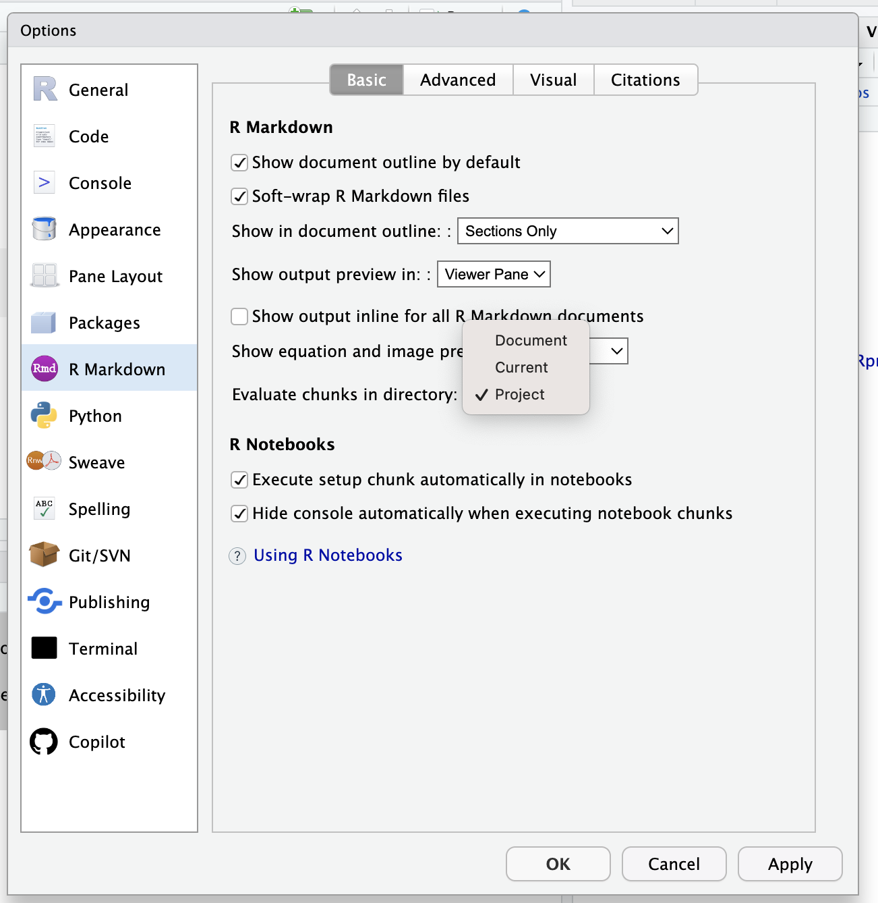
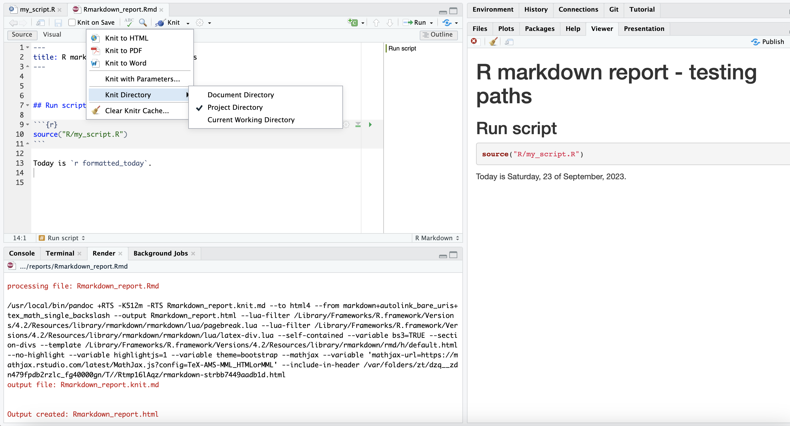

rmarkdown::render("reports/Rmarkdown_report_2.Rmd")
quarto::quarto_render("reports/quarto_report_1.qmd")The curse of R Markdown and Quarto file paths
About me
This is a short post I wrote for my reference and I am sharing just in case it is useful for someone else. See my academic website at emilio.lcano.com. Comments and amendments are more than welcome in the GitHub repository of this post.
Scope
When creating R Markdown or Quarto Documents, often we have to read data or run code from other files. If all files are in different folders, rendering the output document can be a nightmare. This short R tip explains how to cope with paths in R Markdown and Quarto documents.
RStudio vs function call
First of all, rendering an output document from a source Rmd or qmd file can be done mainly in two ways:
- From the “Knit” or “Render” buttons in the RStudio interface, see Figure 1.
- Using the appropriate rendering function:
Default working directory (execution folder, root directory)
By default, in both cases the “computation” chunks are run in a new R session, whose working directory is the source file location. For example, if the source file is in the reports folder as in the examples shared here, then the paths to other files in the project should start by ../ followed by the path to the resource (script, data, image, …) from the project root directory.
Caution
Note that if the call to a script contains file paths, they also must be relative to the document path. Otherwise errors would keep showing up, making us mad.
Using other execution paths
The default behavior for R markdown documents can be overridden by setting the “Knit Directory” option in RStudio global options, see Figure 3, or in the editor knit options, see Figure 3. It can be the document directory, project directory, or current directory. In many cases the project directory is the most appropriate setting especially in large projects with lots of folders.
Note
Another perk of using the project directory as knit directory is that running chunk code from the document just works. Otherwise I sometimes get errors because RStudio messes with paths.


Another way of setting the working directory for the R Markdown document is setting the option for knit. Thus, the following code put in a chunk at the beginning of the Rmd file would set the parent directory as the working directory for the document1. Notice that, in this case, that has the same effect as setting RStudio options, but it can be used to set any other directory.
knitr::opts_knit$set(root.dir = "..")This can be also set when rendering the document from the function:
rmarkdown::render("reports/Rmarkdown_report_1.Rmd",
knit_root_dir = "..")As for quarto documents, there are not options (at least at the time this is been written) in RStudio for changing the default behavior. Nevertheless, the last two approaches can be followed in order to use the project directory (or any other than the document directory). See quarto_report_2.qmd, and the following example:
quarto::quarto_render("reports/quarto_report_3.qmd",
execute_dir = ".")
Caution
Note that in quarto::quarto_render(), execute_dir is evaluated from the current working directory, whereas knit_root_dir in rmarkdown::render() is evaluated in the document directory. Yes, what a mess!
The {knitr} package and chunk options can also be set in the YAML header of a quarto document. See for example quarto_report_4.qmd, whose YAML header is this one:
---
title: "Quarto report - Project path as option in chunk"
format: html
knitr:
opts_knit:
root.dir: ".."
---Final remarks
Note
Some R users advice using the {here} package whenever calling a file. This assures that paths are relative to the project directory. So far I have not find it useful in my data analysis pipelines, but I am sure it is for others.
Tip
The information in this post applies to paths within chunks. If you want to manage paths to resources in markdown text, e.g., images, maybe you should start with a quarto project.
Resources
This file and its reproducible examples can be found in this GitHub repository.
Session Info
If you see this post with different versions that the ones I used, the results might not be exactly the same.
sessionInfo()R version 4.2.3 (2023-03-15)
Platform: x86_64-apple-darwin17.0 (64-bit)
Running under: macOS Big Sur ... 10.16
Matrix products: default
BLAS: /Library/Frameworks/R.framework/Versions/4.2/Resources/lib/libRblas.0.dylib
LAPACK: /Library/Frameworks/R.framework/Versions/4.2/Resources/lib/libRlapack.dylib
locale:
[1] en_US.UTF-8/en_US.UTF-8/en_US.UTF-8/C/en_US.UTF-8/en_US.UTF-8
attached base packages:
[1] stats graphics grDevices utils datasets methods base
loaded via a namespace (and not attached):
[1] htmlwidgets_1.6.2 compiler_4.2.3 fastmap_1.1.0 cli_3.6.1
[5] tools_4.2.3 htmltools_0.5.5 rstudioapi_0.14 yaml_2.3.7
[9] rmarkdown_2.20 knitr_1.42 jsonlite_1.8.4 xfun_0.39
[13] digest_0.6.31 rlang_1.1.1 evaluate_0.20 Footnotes
see the Rmarkdown_report_2.Rmd in the shared repository of this post↩︎